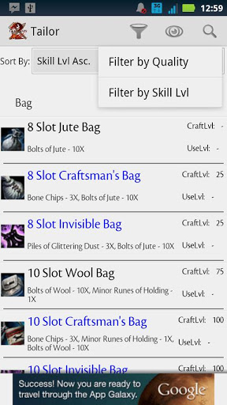
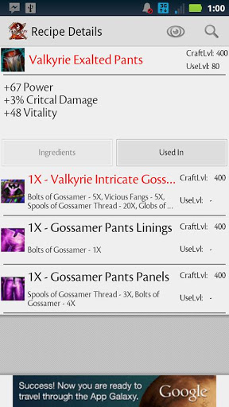

Guild Wars 2: Crafting DB is a utility application I developed to improve the user experience for players of Arena Net’s MMO for the PC called Guild Wars 2. The game allows you to choose a profession such as weaponsmith or jeweler and create hundreds of swords, accessories, and other items to improve the strength and cosmetic appearance of your in-game character, or to sell to others for profit. Sifting through the recipes needed to craft these items in-game is no easy task and the online databases required you to switch out of the game and had their own user interface problems. I set out to create a mobile database of craftable items in the game that users could easily reference on their mobile device while playing the game on their computer. It has consistently been in the top two results when searching for “Guild Wars 2” on the Google Play Store, has nearly 60,000 downloads, and 4-stars after over 250 ratings!

